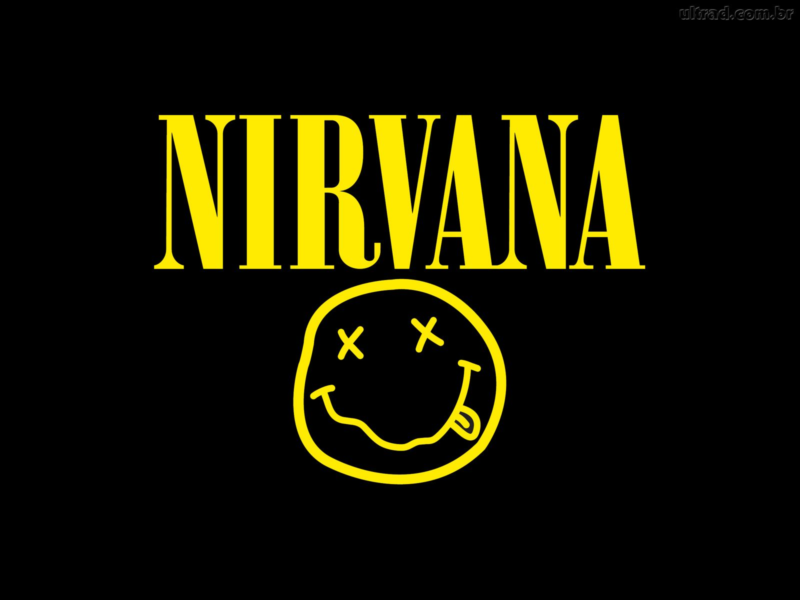

Nirvana

Американская группа Nirvana образовалась в 1987 г. в г. Абердин, штат Вашингтон. Гитарист и вокалист Курт Кобейн (Curt Cobain) и бас-гитарист Крис Новоселич (Chris Novoselic) в середине 80-х гг. ходили в одну школу, однако долгое время не пересекались, пока не стали вместе посещать репетиции группы The Melvins. Кобейн долго упрашивал Новоселича собрать вместе группу и даже вручил ему демо-запись своей старой группы Fecal Matter, однако согласие получил лишь через пару лет. Первым барабанщиком стал Боб МакФадден (Bob McFadden), который долго не задержался, и ему на смену пришел Аарон Беркхард (Aaron Burckhard). Сначала трио работала с материалом Fecal Matter, но позже ребята принялись за новые песни. Новой проблемой стало имя группы. Перебрав множество вариантов, Кобейн в итоге остановился на Nirvana – по его словам вместо стандартных злых названий ему наоборот хотелось чего-то доброго. Затем барабанщики стали активно меняться – после потери связи с Беркхардом на его место ненадолго пришел Дейл Кровер (Dale Crover) из The Melvins. С ним группа записывает первые демо. Затем Кровер переезжает в Сан-Франциско, и по его рекомендации группа взяла в свои ряды Дейва Фостера (Dave Foster), которого сменил ненадолго вернувшийся Беркхард. Дошло до того, что Кобейн и Новоселич дали объявление в газету, но оно осталось без внимания. Проблему решил некий общий друг, познакомивший друзей с Чедом Ченнингом (Chad Channing), который решил попробоваться на вакантное место. Хотя ни Кобейн, ни Новоселич ни разу официально не сказали, что приняли его, Ченнинг в мае 1988 г. принял участие в первом концерте Nirvana. Где-то в это же время группа обосновывается в г. Сиэтл, штат Вашингтон.